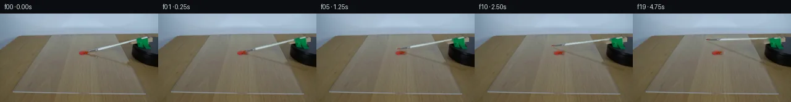

![首帧]()

Round 00
2026-11-05T15:05:39.394320+00:00像素候选变化代码 +225/−0inspection 更新
pixels ae61fe4f27329709 · code 01b95d12735c499c
查看本轮 generate.py 真实 diff
--- previous/generate.py
+++ current/generate.py
@@ -0,0 +1,225 @@
+"""Local pixel continuation of the supplied photograph; no models or engines."""
+from pathlib import Path
+import json
+import math
+import cv2
+import numpy as np
+from PIL import Image, ImageDraw
+from artifact_io import save
+
+ROOT = Path(__file__).resolve().parent
+S = 4
+W, H = 256, 144
+SOURCE = np.array(Image.open(ROOT / 'first_frame.png').convert('RGB'))
+yy, xx = np.mgrid[:H, :W].astype(np.float32)
+AXIS = np.array([231.0, 39.75], np.float32)
+TIP = np.array([139.8, 62.55], np.float32)
+YSCALE = 0.35
+
+
+def pose(degrees):
+ a = math.radians(degrees)
+ c, s = math.cos(a), math.sin(a)
+ return np.array([[c, -s / YSCALE], [s * YSCALE, c]], np.float32)
+
+
+def moved(p, degrees):
+ p = np.asarray(p, np.float32)
+ return (p - AXIS) @ pose(degrees).T + AXIS
+
+
+# Remove only the initial narrow moving brush and its thin cast shadow.
+# The original photographic scene supplies all the static pixels.
+center = 97.5 - 0.25 * xx
+distance = (yy - center) / math.sqrt(1.0625)
+shaft_region = (xx >= 143) & (xx <= 220) & (np.abs(distance) <= 3.1)
+# Above the green bearing a short length of the handle is visible.
+blue_white = (SOURCE[..., 2].astype(float) > SOURCE[..., 0] + 7.0) & (SOURCE[..., 1] > 135)
+rear_region = (xx > 220) & (xx <= 238) & (np.abs(distance) < 2.7) & blue_white
+shadow_y = 0.265 * xx + 27.8
+shadow_region = (xx >= 143) & (xx <= 218) & (np.abs(yy - shadow_y) < 3.0)
+repair_mask = ((shaft_region | rear_region | shadow_region).astype(np.uint8) * 255)
+base = cv2.inpaint(SOURCE, repair_mask, 4, cv2.INPAINT_TELEA).astype(np.float32)
+# The occluded rear handle reveals the green mount on its lower edge,
+# and wood immediately above it. Restore it from the photograph locally.
+for y, x in zip(*np.where(rear_region)):
+ if x >= 229 and y >= 40:
+ base[y, x] = SOURCE[min(y + 3, 49), x]
+ elif y <= 39:
+ base[y, x] = SOURCE[max(y - 4, 34), x]
+
+# Extract the brush with subpixel edge coverage, recovering its foreground
+# colors from the photographed background instead of copying a wood strip.
+alpha = np.clip(2.0 - np.abs(distance), 0, 1)
+alpha *= ((xx >= 143) & (xx <= 238))
+alpha *= np.where(xx >= 220, blue_white.astype(np.float32), 1.0)
+# Above the clamp, photographed green pixels occlude the rod.
+green = (SOURCE[..., 1] > 65) & (SOURCE[..., 1].astype(float) > SOURCE[..., 0] * 1.18) & (SOURCE[..., 1].astype(float) > SOURCE[..., 2] * 1.10) & (xx >= 219) & (xx <= 241) & (yy >= 37) & (yy <= 60)
+alpha[green] = 0
+foreground = np.zeros_like(base)
+valid = alpha > 0.02
+foreground[valid] = np.clip((SOURCE.astype(np.float32)[valid] - (1 - alpha[valid, None]) * base[valid]) / alpha[valid, None], 0, 255)
+premultiplied = foreground * alpha[..., None]
+# Use the photographed green silhouette as the foreground bearing cover.
+cover = green.astype(np.float32)
+cover_hi = cv2.resize(cover, (W*S, H*S), interpolation=cv2.INTER_LINEAR)
+base_hi = cv2.resize(base, (W*S, H*S), interpolation=cv2.INTER_LINEAR)
+sprite_hi = cv2.resize(premultiplied, (W*S, H*S), interpolation=cv2.INTER_LINEAR)
+alpha_hi = cv2.resize(alpha, (W*S, H*S), interpolation=cv2.INTER_LINEAR)
+
+
+def stroke(mask, pts, thickness):
+ pts = np.round(np.asarray(pts) * S).astype(np.int32)
+ cv2.polylines(mask, [pts], False, 1.0, max(1, round(thickness*S)), cv2.LINE_AA)
+
+
+def blend(canvas, coverage, color):
+ return canvas * (1-coverage[..., None]) + np.asarray(color, np.float32) * coverage[..., None]
+
+
+def paint_layer(t):
+ """Accumulated viscous paint. Once deposited, each sample is stationary."""
+ wet = np.zeros((H*S, W*S), np.float32)
+ fine = np.zeros_like(wet)
+ last = min(t, 8)
+ # Explicit small hair marks; no splatter or movement of the main dollop.
+ for k in range(1, last*12 + 1):
+ frame_time = k / 12
… diff truncated; 138 more lines …